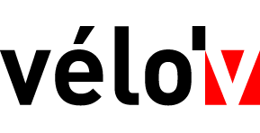

Bienvenue sur l'application de location
 de la ville de Lyon.
Démarrer

1 Zoomez sur la carte
ci-dessous, à l'aide de "CTRL + Molette de défilement" jusqu'à obtenir l'affichage du marqueur
 de la station voulue.
de la station voulue.

2 Cliquez sur le marqueur
puis apposez votre signature dans le cadre rouge prévu à cet effet.

3 Zoomez sur la carte ci-dessous, à l'aide de "CTRL + Molette de défilement" jusqu'à obtenir l'affichage
du marqueur
de la station voulue.

4 Zoomez sur la carte ci-dessous, à l'aide de "CTRL + Molette de défilement" jusqu'à obtenir l'affichage
du marqueur
de la station voulue.